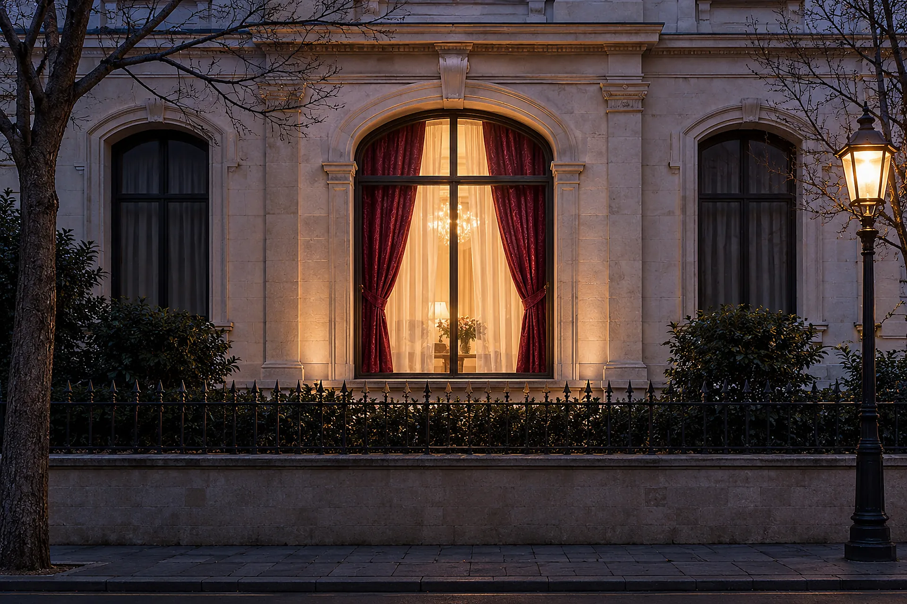
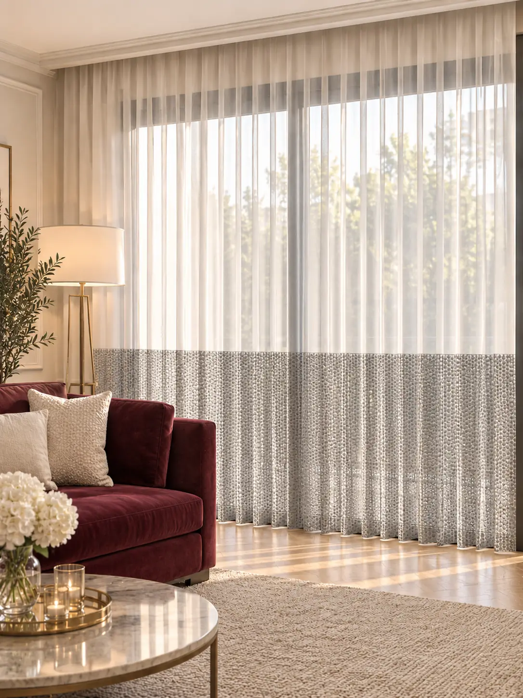
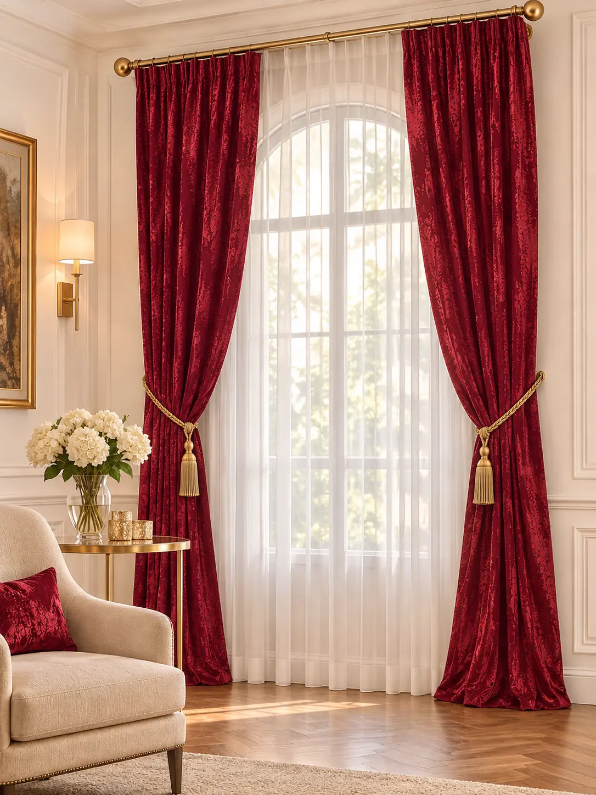
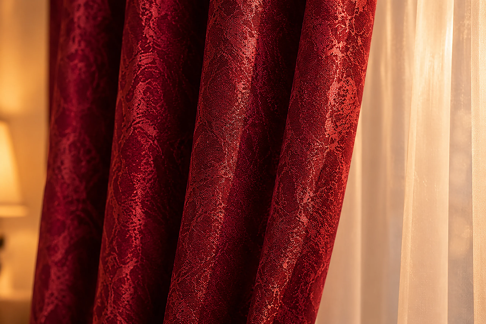
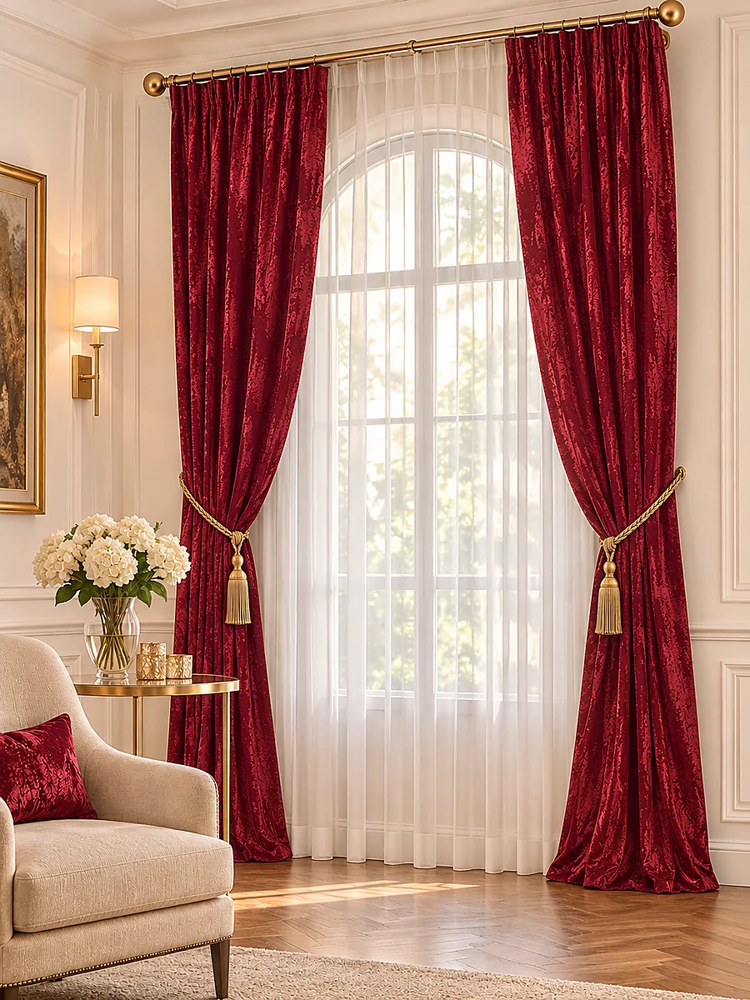
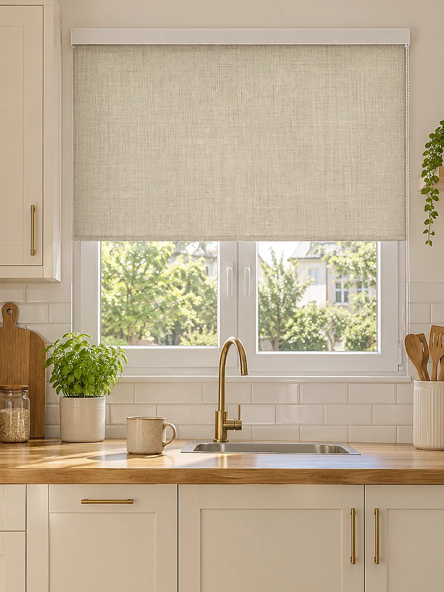
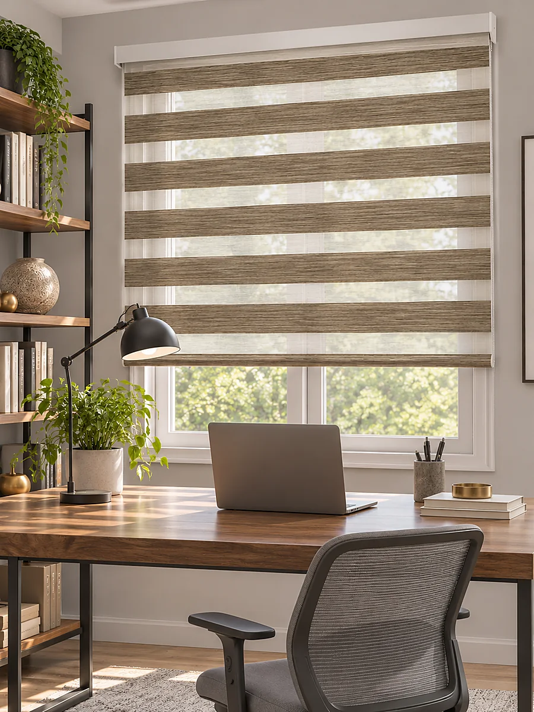
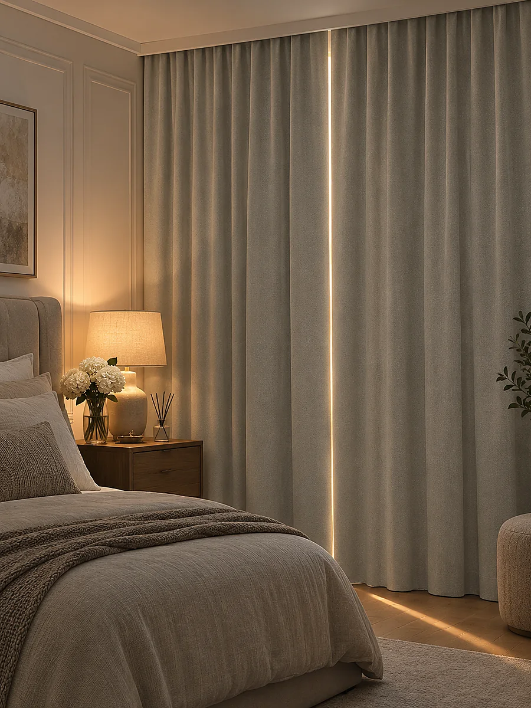
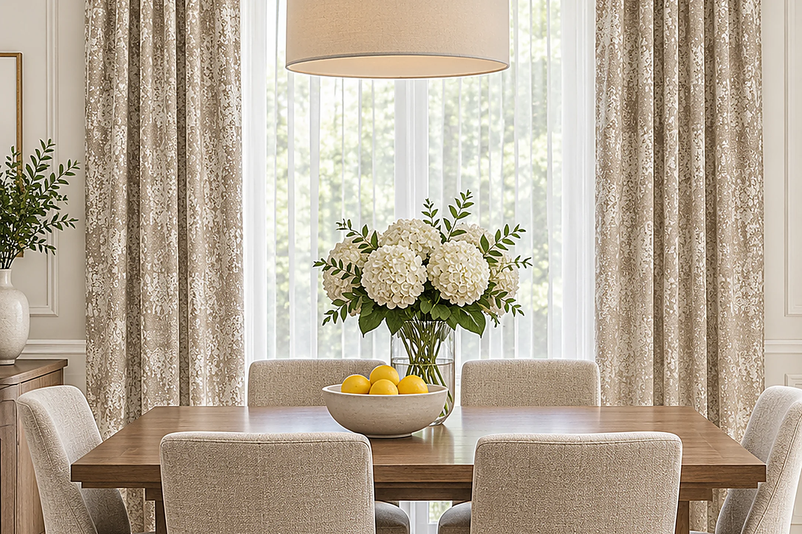
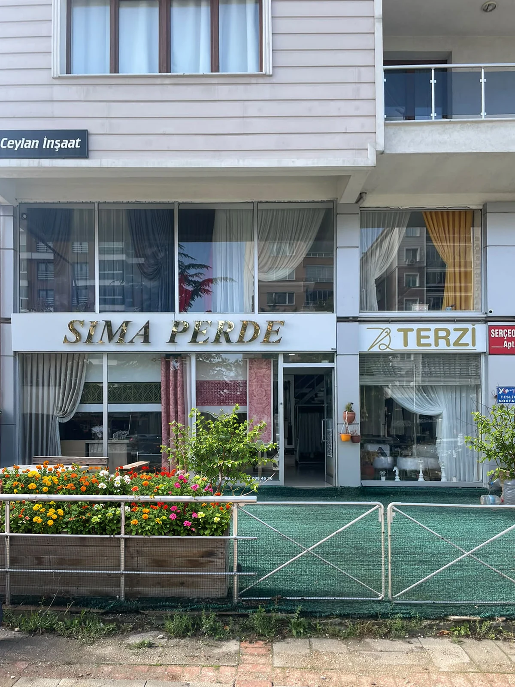

01
Tül
Işığı yumuşatan, odayı ferah tutan ince perdeler.




Uşak'ta perde · 2020'den beri
Sima Home · Uşak
Sima Home, 2020'den beri Uşak'ta bir perde mağazası. Tülden fona, stordan zebraya kumaşı sizinle birlikte seçiyor, ölçünüze göre kesip dikiyor ve evinize takıyoruz. Uşak içinde ölçü de montaj da ücretsiz.
Ürünler
Her ürünü kendi kumaşlarımızla, farklı bir odada gösterdik.
01
Işığı yumuşatan, odayı ferah tutan ince perdeler.

02
Tülün iki yanında renk ve doku katan, dökümlü perdeler.

03
Yukarı sarılarak açılan, sade ve pratik tek parça perde.

04
Şeritleri kaydırarak içeri giren ışığı siz seçersiniz.

05
Işığı tamamen kesen blackout ve saten güneşlik.
Koleksiyon


Mağazamız